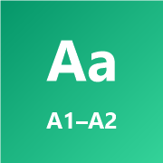
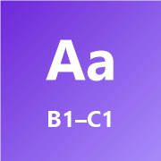

Lexi
Go
Английские слова · британское произношение

Lexi Starter
Уровни A1–A2 · базовая лексика для быта, поездок и простых диалогов

Lexi Pro
Уровни B1–C1 · продвинутая лексика, нюансы, деловой английский
Как добавить на экран «Домой»:
открой нужное приложение в Safari → кнопка «Поделиться» → «На экран „Домой“». Сделай это отдельно для Starter и для Pro — получится два значка.